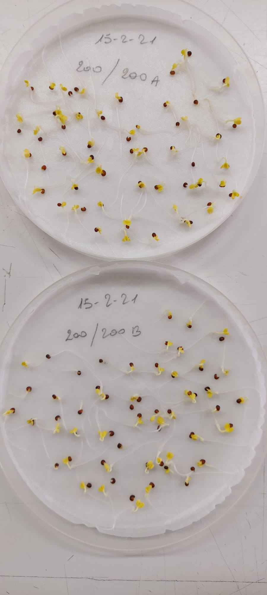

Analysing seed germination and emergence data with R: a tutorial
Update: v. 0.551 (2022-10-20), compil. 2022-10-20
Section 1 Introduction

Germination/emergence assays are relatively easy to perform, by following standardised procedures, as described, e.g., by the International Seed Testing Association (see here ). In short, we take a sample of seeds and we put them in an appropriate container. We put the container in the right environmental conditions (e.g., relating to humidity content and temperature) and we inspect the seeds according to a regular schedule (e.g., daily). At each inspection, we count the number of germinated/emerged seeds and remove them from the containers; inspections are performed until no new germinations/emergences are observed for a sufficient amount of time.
We see that these assays are rather simple, but, in spite of such simplicity, the process of data analysis still presents several grey areas. How should we quantify the germination/emergence process? How should we compare the germination/emergence of different seed lots?
A brief survey of literature shows that a plethora of methods is used, which is certainly encouraged by the wide availability of computer packages. Some of these methods have been around for quite a while (e.g., the use of germination indices or nonlinear regression), some others are relatively new (e.g., methods from survival analysis). It is clear that not all these methods are efficient or reliable, especially when they are used with little concern about the basic assumptions that each method makes.
Furthermore, the use of a lot of different methods of data analysis by different research groups may serve the purpose of creativity, but are we really sure that it also serves the purpose of advancing science? Wouldn’t it be better if we could use the same reliable methods of data analysis, so that we could better understand each other, compare our results and pool them together?
Therefore, together with some collegues, we decided to start defining a framework for the analysis of germination and emergence data, which might help the readers to select efficient and reliable methods and, lately, improve comparisons and communication of results within the scientific community. We decided to structure this framework as the combination of:
- a step-by-step procedure
- the methods to accomplish it
- a user friendly software interface, based on a new R package.
1.1 The R package
As we anticipated, the analyses we propose for seed germination/emergence assays can be performed by using our new R package, namely drcte. This package is heavily based on the ‘drc’ package (Ritz et al., 2015) that is a very flexible software for general model fitting purposes. Although drc contains, already, several basic functions for time-to-event analyses, we felt that, in order to meet the specific needs of agricultural research, it would be useful to make some further customisation and develop some additional functions, which we implemented in the ‘drcte’ package. Furthermore, we also created the drcSeedGerm package, that contains specific functions for seed germination/emergence assays.
Both the drcte and drcSeedGerm packages can be downloaded and installed from gitHub, by using the code proposed in the box below. It requires the ‘devtools’ package, that needs to be as well installed, if it is not already included in the system. Please, make sure you always have the latest version of both packages.
install.packages("devtools")
library(devtools)
install_github("OnofriAndreaPG/drcte")
install_github("OnofriAndreaPG/drcSeedGerm")Once you are ready with the above packages, you can proceed to work with the rest of this tutorial.
1.2 Our purpose
We have already presented the procedure and the R package in a recent paper in the Journal Weed Science (Onofri et al., 2022; if you are interested please follow this link to the paper). The purpose of this tutorial is to expand on that manuscript and present several realistic examples, relating to seed germination/emergence assays. We would like to emphasize that these methods can be as well useful for other types of time-to-event or censored data in agriculture.
Building this site is still (and will always be…) an ongoing task, so, please forgive us if you do not find what you are looking for. In the meantime, you can take a look at the published papers from my group and at my blog, at this page. We look forward to your comments to improve our approach. Please, drop your notes to me:
Prof. Andrea Onofri
Department of Agricultural, Food and Environmental Sciences
University of Perugia (Italy)
andrea.onofri@unipg.it
If you want to be updated, you can follow me at:
Follow